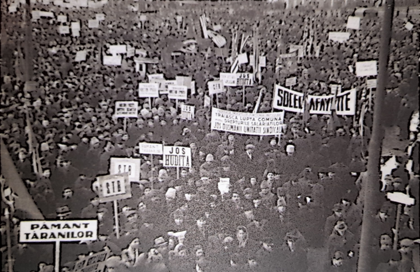
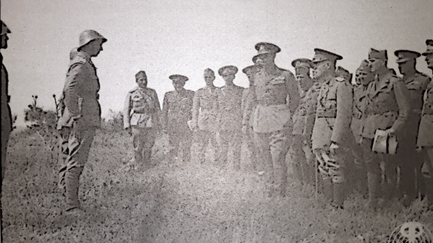
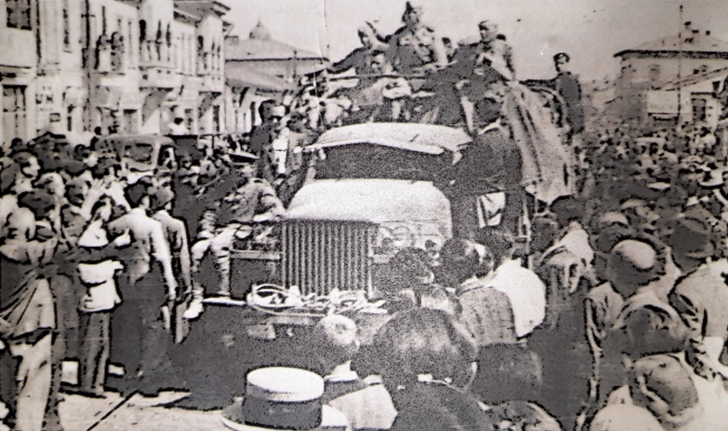
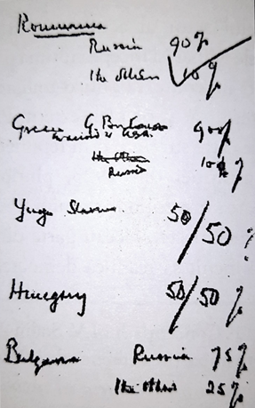
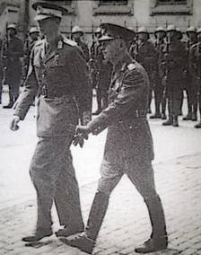
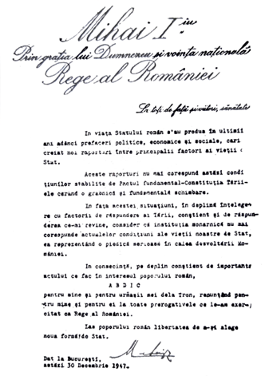
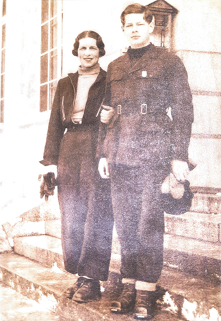

Imagini cu Regele Mihai I
Regele Mihai, Petru Groza și Lucrețiu Pătrășcanu în Parlamentul de la București în 1946 (Fototeca Arhivelor Naționale ale României)

Demonstrație comunistă în București 1945

Regele Mihai și mareșalul lon Antonescu în inspecție pe front (Fototeca Arhivelor Naționale ale României)

Intrarea trupelor sovietice în București, 1944

Acordul de procentaj de la Moscova, 1944

Regele Mihai și mareșalul Ion Antonescu (Fototeca Arhivelor Naționale ale României)

Actul de abdicare al Regelui Mihai I

Textul legii de proclamare a RPR

Regele Mihai și Regina Mamă Elena (Focoteca Arhivelor Naționale ale României)